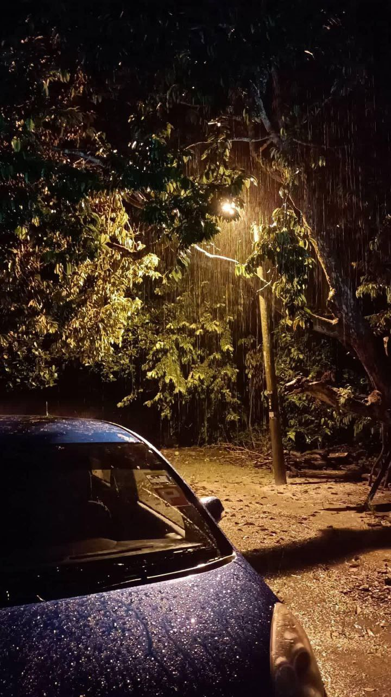
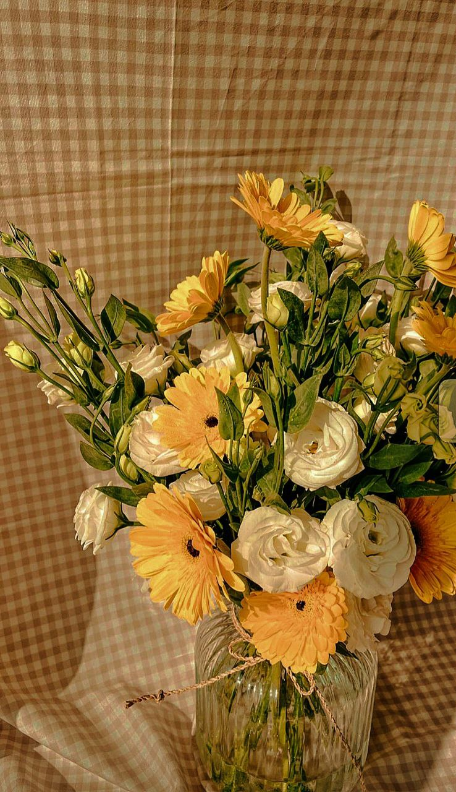
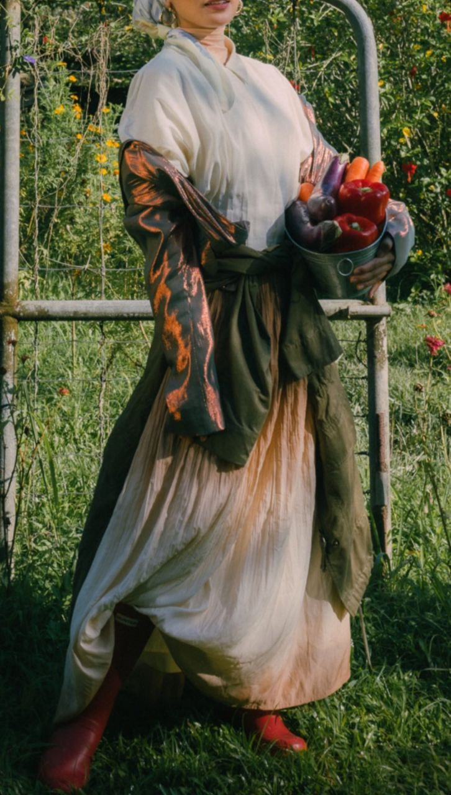
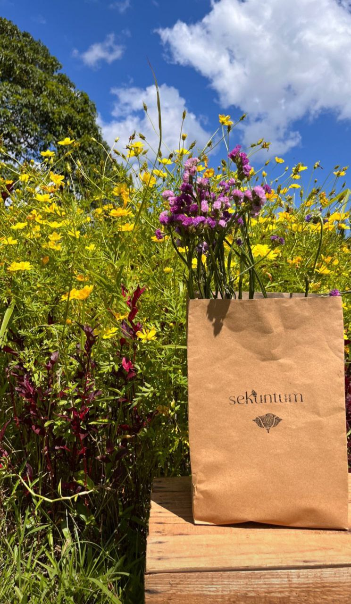

|NATURE POEM|
Sometimes, we need it to heal, read and listen to classical forms.
|  |
Nature's Lullaby by Theo WilliamsSounds of singing birds so early in the morning
Is a beauty in life that no one can adorn. Soothing peace of waves gently caressing the sand Like embracing lovers, amidst placidity they stand. The scent of flowers, paint a smile on thy face Surrounded by nature's love, most peaceful escape. Showered by warmth and richness from heavenly rays Extracting the best of thy soul, glowing every day. Night befalls; the bright moon so tender To nature's love and heart I surrender. I lay my head down and say goodbye To nature's beauty; my sweet lullaby. |
 |
Beauty And The Beast by TangoNature is beautiful, quiet, and serene,
nature is the forest, with its many shades of green. Nature is the birds, welcoming in the dawn, nature is a calf, struggling to its feet as soon as it is born. Nature is a salmon, swimming against the stream, nature is a volcanic geyser, venting off steam. Nature is a beast, kicking up a storm, nature is the trees, all bent, and broken, looking so forlorn. Nature is lightning striking the ground, nature is a forest fire, consuming all around. Nature is a tornado, with its screaming roar, nature is a tidal wave, washing every thing ashore. Nature can be a beauty, and nature can be a beast. |
||
|  |
To Autumn BY John KeatsSeason of mists and mellow fruitfulness,
Close bosom-friend of the maturing sun; Conspiring with him how to load and bless With fruit the vines that round the thatch-eves run; To bend with apples the moss'd cottage-trees, And fill all fruit with ripeness to the core; To swell the gourd, and plump the hazel shells With a sweet kernel; to set budding more, And still more, later flowers for the bees, Until they think warm days will never cease, For summer has o'er-brimm'd their clammy cells. Who hath not seen thee oft amid thy store? Sometimes whoever seeks abroad may find Thee sitting careless on a granary floor, Thy hair soft-lifted by the winnowing wind; Or on a half-reap'd furrow sound asleep, Drows'd with the fume of poppies, while thy hook Spares the next swath and all its twined flowers: And sometimes like a gleaner thou dost keep Steady thy laden head across a brook; Or by a cyder-press, with patient look, Thou watchest the last oozings hours by hours. Where are the songs of spring? Ay, Where are they? Think not of them, thou hast thy music too,— While barred clouds bloom the soft-dying day, And touch the stubble-plains with rosy hue; Then in a wailful choir the small gnats mourn Among the river sallows, borne aloft Or sinking as the light wind lives or dies; And full-grown lambs loud bleat from hilly bourn; Hedge-crickets sing; and now with treble soft The red-breast whistles from a garden-croft; And gathering swallows twitter in the skies. |
 |
After Apple-Picking By Robert FrostMy long two-pointed ladder's sticking through a tree
Toward heaven still, And there's a barrel that I didn't fill Beside it, and there may be two or three Apples I didn't pick upon some bough. But I am done with apple-picking now. Essence of winter sleep is on the night, The scent of apples: I am drowsing off. I cannot rub the strangeness from my sight I got from looking through a pane of glass I skimmed this morning from the drinking trough And held against the world of hoary grass. It melted, and I let it fall and break. But I was well Upon my way to sleep before it fell, And I could tell What form my dreaming was about to take. Magnified apples appear and disappear, Stem end and blossom end, And every fleck of russet showing clear. My instep arch not only keeps the ache, It keeps the pressure of a ladder-round. I feel the ladder sway as the boughs bend. And I keep hearing from the cellar bin The rumbling sound Of load on load of apples coming in. For I have had too much Of apple-picking: I am overtired Of the great harvest I myself desired. There were ten thousand thousand fruit to touch, Cherish in hand, lift down, and not let fall. For all That struck the earth, No matter if not bruised or spiked with stubble, Went surely to the cider-apple heap As of no worth. One can see what will trouble This sleep of mine, whatever sleep it is. Were he not gone, The woodchuck could say whether it's like his Long sleep, as I describe its coming on, Or just some human sleep. |
©2023; Designed by INTAN NURZAHIRAH